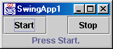
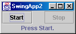
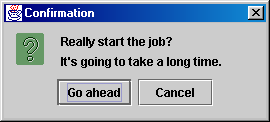

Feedback Form
|
|
Start of Tutorial > Start of Trail |
Search
Feedback Form |
1. Show the code that creates a label displaying the following text, with the italics and boldface as shown in this screenshot:2. Use the API documentation or online tutorial, if necessary, to answer the following questions:
a. Assume that you have a Swing label that tends to have more horizontal space than it needs to display its text. What code would you use to make the text within a label (3. Is the following code thread-safe? If so, why? If not, what can you do to make it thread-safe?Jlabel) be centered instead of left-aligned?b. What method do you use to enable and disable such components as Swing buttons?
c. How do you add a component to the rightmost (east) cell in a container that uses
BorderLayout?JLabel label; Container createGUI() { ... //create a JPanel; add components to it, including label ... return panel; } public static void main(String[] args) { JFrame f = new JFrame("A Frame"); f.setContentPane(createGUI()); f.pack(); f.setVisible(true); String labelText = findTextFromSomewhere(); label.setText(labelText); }
1. Write an application calledCheck your answers.SwingApp1that has two buttons and one label, arranged as shown in the following screenshot:

Hint: You can use the content pane's defaultBorderLayoutto manage the buttons and label.2. Copy
SwingApp1.javatoSwingApp2.java, and modifySwingApp2so that the Stop button is initially disabled. Implement and register one or two action listeners so that when the user clicks either button, the clicked button is disabled, the other button is enabled, and the label is updated appropriately. Your application should look like this:
 3. Copy
SwingApp2.javatoSwingApp3.java, and modifySwingApp3so that its Start button brings up a dialog that looks like this:
 If the user chooses the Go ahead button, the Start button should do exactly what it did inSwingApp2. If the user does anything else, the application should update the label to report the cancellation and leave the buttons in their existing state.
|
|
Start of Tutorial > Start of Trail |
Search
Feedback Form |